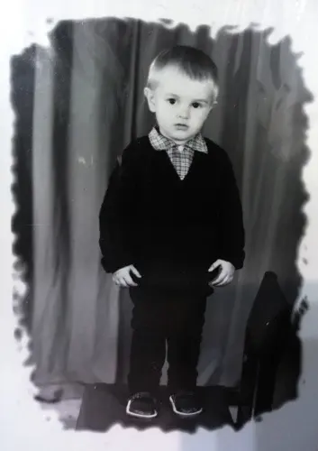

Привет)
Я много думал о происходящем, о твоих словах, о своём поведении. Ты права, тебе сейчас нужно время на себя, на свою борьбу и восстановление. Я хочу извиниться, если завалил тебя лавиной своих чувств, вниманием, песнями, признаниями этими своими. Пусть я это делал от чистого сердца, но это было сильно неправильно. Эгоистично. Оправдания мне нет. Я просто поддался чувству. Своему чувству. Не разобравшись в твоих. И сейчас это может на тебя давить. Отмотать назад невозможно. Заразить тебя локальной амнезией тоже)
Я никуда не исчезаю, не сбегаю, я не устал, мои чувства никуда не делись.
Ты была права опять, когда говорила, что я люблю только то, что ты мне показываешь. Но я хочу любить тебя любую. Добрую, в слезах, радостную, злую, нервную, тревожную, замкнутую, больную, открытую, милую, молчаливую, и всякую-всякую. А если я тебя потеряю, я никогда этого не узнаю, не смогу тебя любить полностью.
Сейчас мои чувства могут быть для тебя очень тяжелой ношей. Может неподъемной. Я чувствую, что давлю на тебя. Неосознанно. Конечно, я хочу тебя окружить любовью и заботой. Это нормально, когда кого-то любишь. Но ты сейчас не в том состоянии, чтобы принять это. Тебе нужно принять себя. Поэтому пусть сейчас моя любовь примет вид не удушающих тебя неуместных нежностей, а настоящей заботы. О твоём комфорте, твоей свободе, твоём здоровье, твоих чувствах. Я хочу, чтобы ты дышала легко. Я с тобой, это неизменно. Просто немного сбавляю обороты. Самую малость.
Я бы мог это делать без всей этой писанины, но боялся, что ты подумаешь, что я решил закончить, или охладел, или ты меня разочаровала. Боялся, что начнёшь себя винить. Вовсе нет. Всё в силе, я твой, ты моя.
Да, мы с тобой изначально условились так и действовать. А потом я начал себе позволять лишнее. Будто это было какое-то развитие, а на самом деле, как мне кажется, тебя это только смущало и вгоняло в ненужные мысли. Я дебил, которому надо повторять по два раза по два раза. Я никуда не ухожу, просто слегка откатим на прежнюю точку, будто сохранение загрузили. Если ты хочешь, конечно. Может я тебя вымотал уже.
Увидел твой пост в вк вдобавок. Может самонадеянно, может это вообще меня не касается. Зато лишних недопониманий станет меньше.
Не нужно меня беречь. Не нужно заботиться о моих чувствах. Пойми просто, что... Только правильно пойми. Это не давление на тебя опять. Всё, что я делал и делаю - это искренне. Это из-за тебя и это о тебе. Оно никуда не исчезнет. Мои чувства не могут быть здоровыми, если причиняют ТЕБЕ боль или дискомфорт. Тогда они просто зря. Тогда они не про уважение и самопожертвование, а про эгоизм. Просто так получилось, что оно сейчас немного мимо. Это не твоя вина. Это я ломанулся в слегка приоткрытую дверь, вместо того, чтобы аккуратно зайти, стараясь не нарушить твой покой.
Не думай, что из-за этого шага чуть назад я начну тут себя ломать, как-то сдерживаться, что мне трудно будет, страдания-мучения. Вообще наоборот. Понимание, что тебе со мной легко - самое драгоценное. Мне сложнее видеть, что я, хоть и не специально, причиняю тебе лишние волнения. Вообще, звучит так пафосно "шаг назад, сбавить обороты". Нагнал говна опять, настрочил поэму... Я просто всего лишь буду чуть меньше тебя доставать своими слащавыми сообщениями, своими "сюси-пусями". Вот и всё. Ну и не смущать признаниями. Ты всё знаешь всё равно. Чуть взрослее просто. Без этой подростковой "люблюнимагу". Вся эта куча буков сугубо чтобы тебя не обидеть, чтобы не подумала, что что-то не так, не дай Бог чтоб себя не начала в чём-то винить.
С одной стороны, если бы мы жили рядом, виделись часто, может и писанины этой не было бы, просто можно поговорить. Но с другой стороны, то, что мы на расстоянии - это ведь тоже прекрасно. Даёт время привыкнуть, даёт время на себя. Мне не дает возможности с загадочной рожей у тебя под окнами ошиваться по ночам) Шучу. Для тебя это очень важно, поэтому всё пусть идёт как идёт. Этот вопрос я вообще не хотел поднимать, чтобы у тебя сомнений или смущений не возникло. Я счастлив тому, что и как между нами происходит.
Вся эта куча букв лишь о тебе. О том, что ты мне действительно дорога, по-настоящему ценна. Об уважении к тебе и твоему миру. Об искреннем желании узнавать тебя и понимать. О надежде, что мы сможем понемногу идти друг к другу, открываться постепенно, привыкать. Я не хочу быть эгоистом и ломать что-то в тебе. Я бы не писал это всё, не размышлял, если бы мне это всё наше с тобой молодое и хрупко не было так сокровенно и нужно. Ты нужна. А для этого нужно трудиться. Не просто врываться в такое большое и неизведанное. В любом деле нужен навык и практика. А я... Ну, я не жалею, что не растрачивал это на кого-то и сохранил. Может оно тебе пригодится когда-то со временем. В любом случае, я с тобой настоящий, без притворств. В любом случае я с тобой.
Прости, что был так бесцеремонен к тебе. "Вижу цель - не вижу препятствий." Но цель она конечна. А я не хочу, чтоб ты заканчивалась.
P.S. Блестяшки в наличии
P.P.S. Прилагаю фотокарточку, на которой я стою на стульчике. Но не для того, чтобы повеситься, а чтоб показать, что кеды и клетчатые рубашки с детства уважаю.
